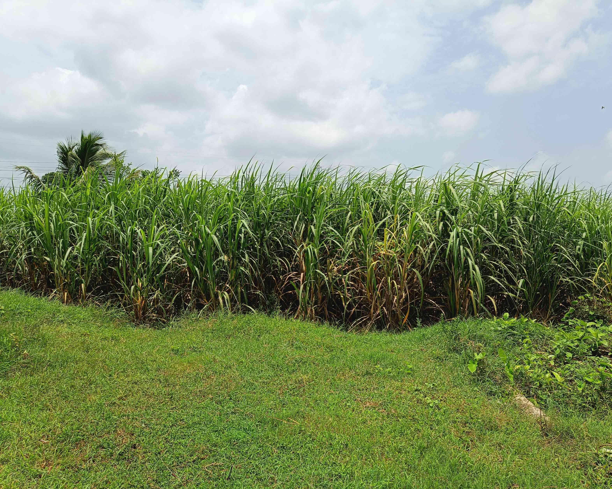
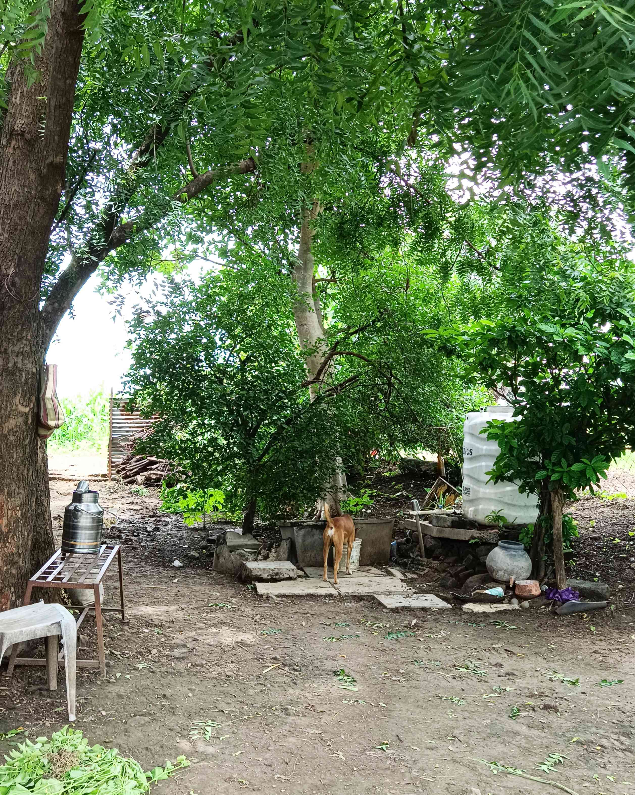
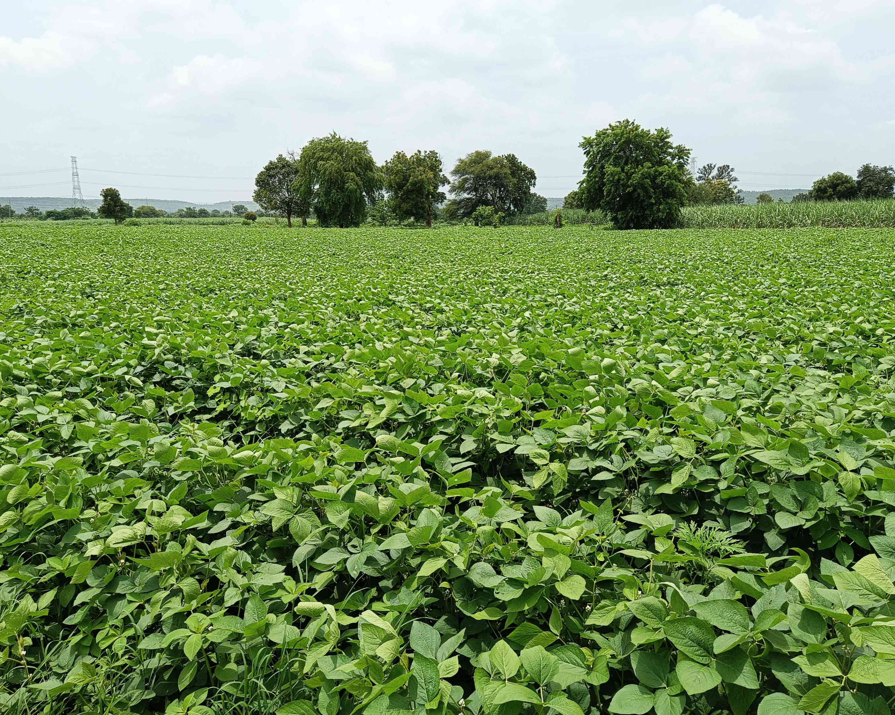
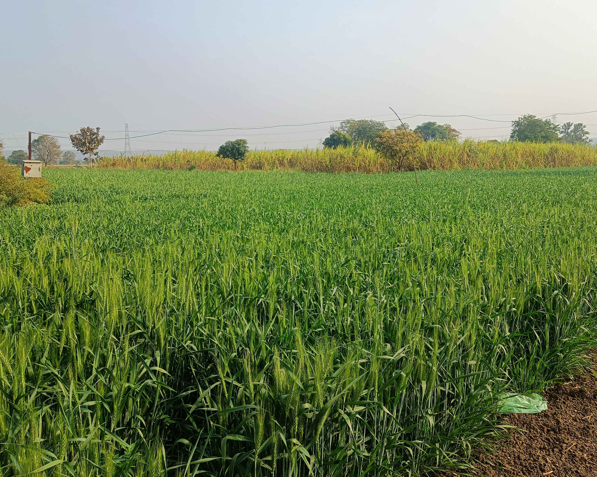
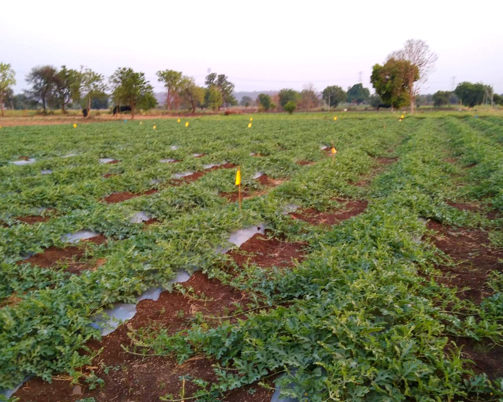
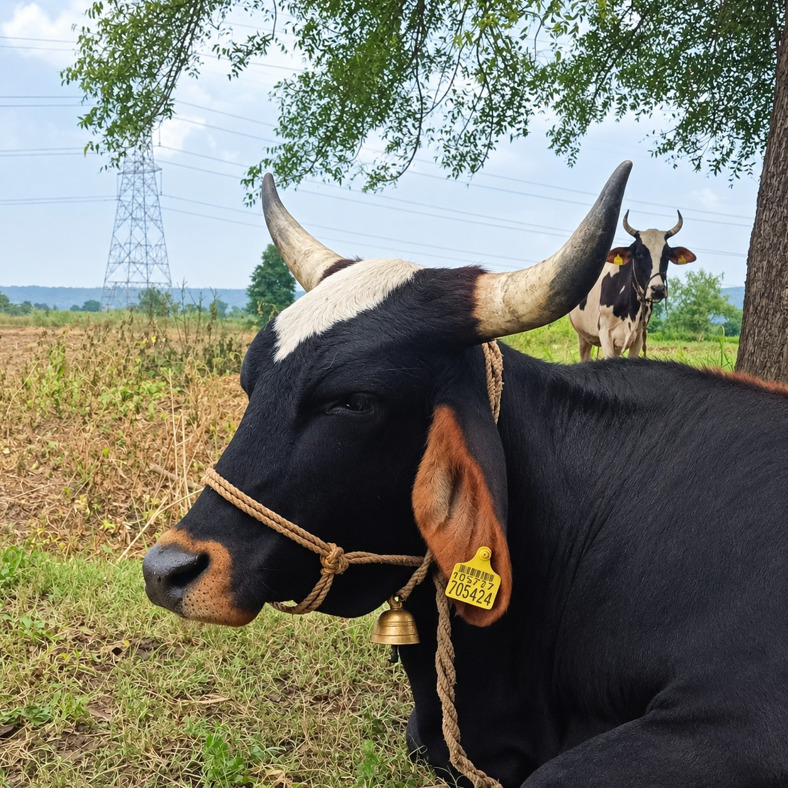
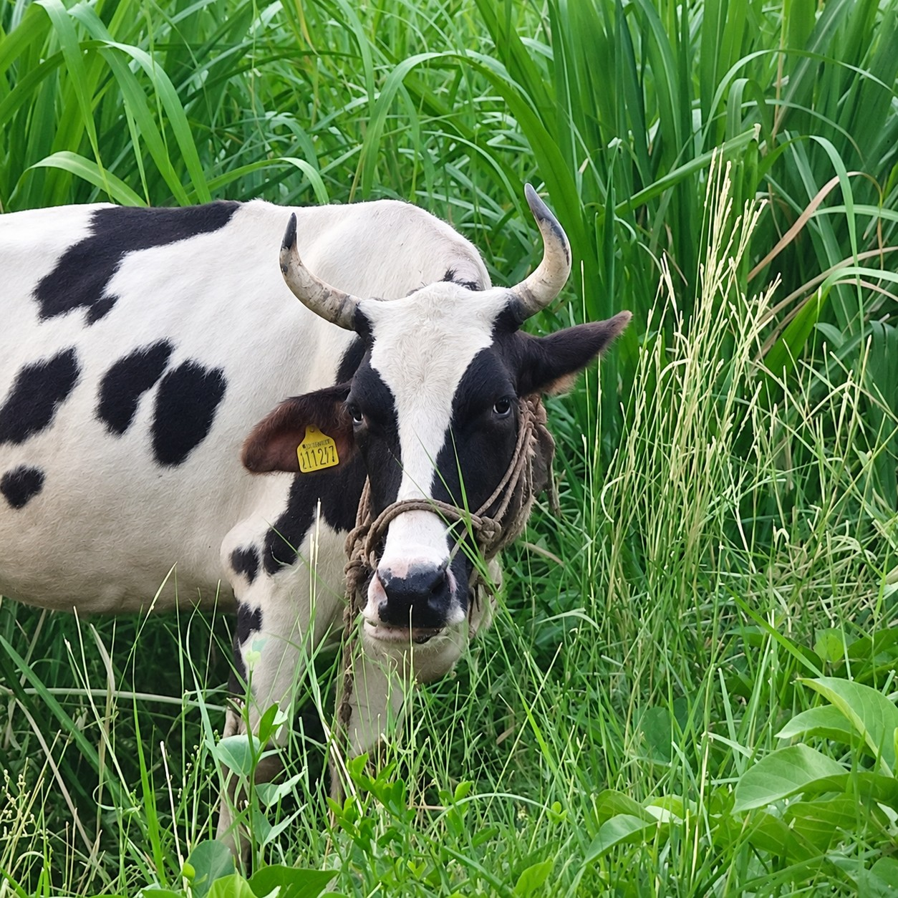
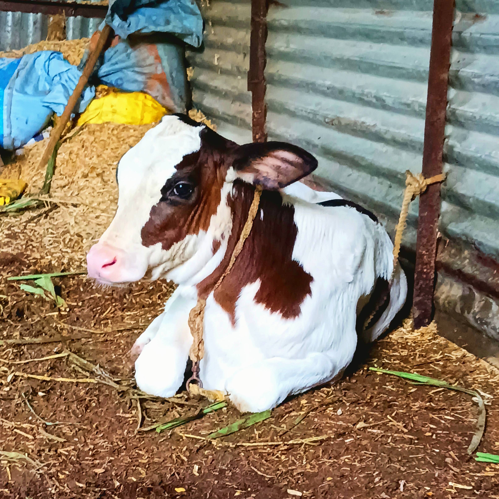
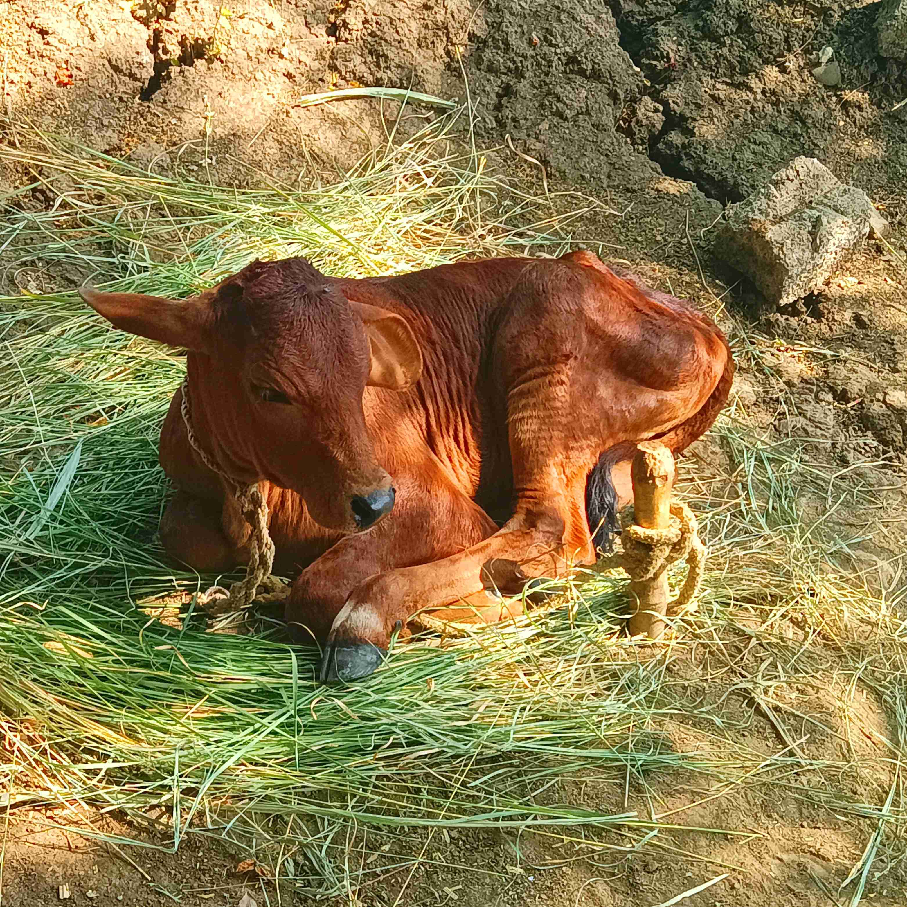
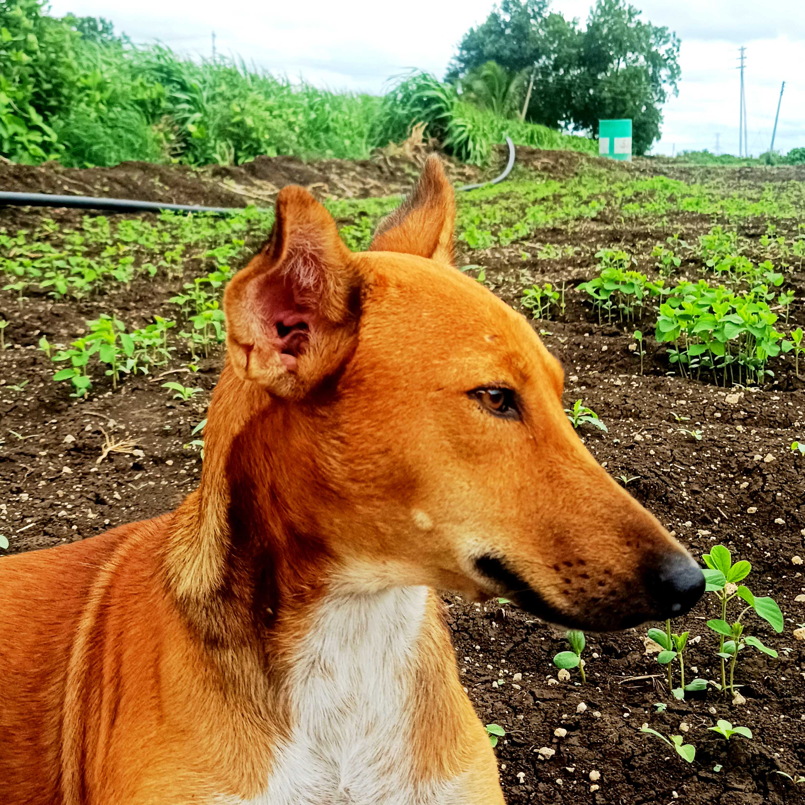

RABI / LONG CYCLE
Sugarcane
Our longest-standing crop, planted for its long growing cycle and harvested for sugar processing.
MAHARASHTRA, INDIA
ABOUT US
Sarkate Farm is a family farm in Maharashtra, tended season after season. Alongside the crops, we care for cows and calves, a farm dog, flowering plants and fruit trees around the farmhouse.
Two borewells help keep the fields and garden watered through the dry months. This site is a small window into everyday life — the crops, the animals, and the land we work.

GROWING CALENDAR
Soyabean follows the monsoon; sugarcane stays in the ground for longer, working through nearly every season before it is cut.
THE CROPS
Four crops across the seasons, each with its own rhythm in the fields.

RABI / LONG CYCLE
Our longest-standing crop, planted for its long growing cycle and harvested for sugar processing.

KHARIF CROP
Sown with the monsoon and harvested before winter — a shorter cycle that rotates through the fields each year.

RABI CROP
Grown in a past season on the farm — a winter Rabi crop, sown after the monsoon and harvested in spring.

KHARIF CROP
Grown in the warmer months, sprawling low across the field until it is ready to pick.
OUR ANIMALS
Part of the family, cared for every day alongside the fields.

COW
One of our two cows on the farm.

COW
The other of our two cows on the farm.

CALF
One of the two calves on the farm.

CALF
One of the two calves on the farm.

GUARD DOG
Our farm dog, watching over the fields and homestead.
GARDEN & ORCHARD
Beyond the fields, the farmhouse is surrounded by flowers, fruit trees and familiar corners of home.
GARDEN
White & pink roses, oleander, hibiscus, and orange jasmine — swipe through.
ORCHARD
Coconut, mango, aavala, chincha, jamun, guava, papaya, and custard apple — swipe through.
HOMESTEAD
General views of the garden and homestead area — swipe through.
HARVEST
A small visual record of the work that begins in the field and ends with the harvest.
WATER & LAND
Water, irrigation and the land itself are part of the everyday work behind every crop.
Two borewells help provide water for the farm and garden.
Water is carried to the fields so crops can keep growing through the seasons.
The fields, trees and farmhouse together make up the landscape we call home.
GALLERY
A few glimpses — six photographs from around Sarkate Farm.
CONTACT
If you'd like to get in touch, you can reach Sarkate Farm by email or follow along on Instagram.